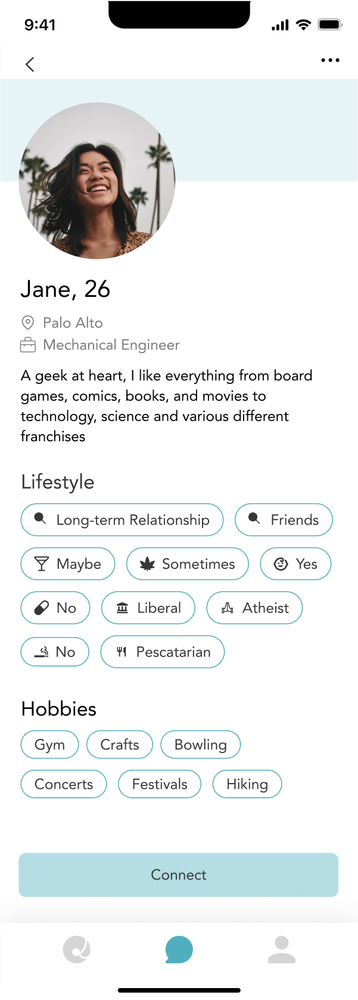
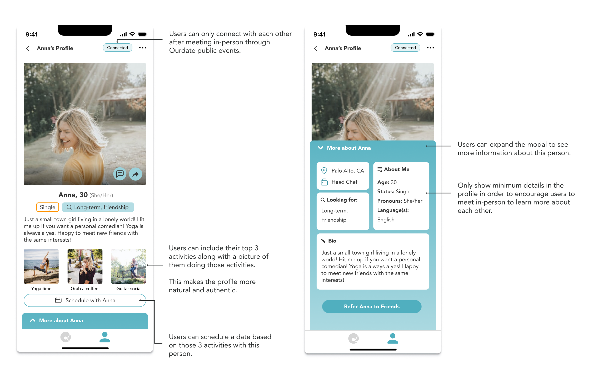

Online dating nowadays are so focused on the “swiping left and right” mentality. This in the long run can give users burnout from bad experiences like catfishing, ghosting, trust issues, and Pen Pal Syndrome*.
Solution Overview
Ourdate is a community-based dating app that focuses on in-person meeting. Singles can meet other singles in public events first before connecting with each other individually.
Ourdate’s mission is to stop dating burnouts and gives users a new way to make dating an enjoyable and fulfilling experience.
Roles and Responsibilities
As a UX/UI Designer Intern, I worked with the Ourdate design team to:
Identify existing problems in the Ourdate app.
Conduct user research and usability testing to validate our assumptions and make informed design decisions.
Brainstorm and prototype new features based on user findings.
Maintained and regularly updated design specifications, and strategically revised the design system to facilitate the development process.
Goals
I specifically conducted research and designed the following 3 features in the Ourdate app, each accomplishing a different goal:
Profile Page Redesign
Goal: To encourage Ourdate users to meet each other in-person before chatting.
Ourdate Hangout Feature
Goal: To make public meetups a less anxious experience.
Ourdate GuruFox Feature
Goal: To simplify the process of planning dates.
Feature 1
Ourdate Dating Profile Redesign
I worked alongside two other designers to redesign the profile page of Ourdate app.
The Problem:
The original profile page design fails to communicate our app goal of encouraging users to meet each other in-person.

Based on multiple testing sessions we conducted with Ourdate users, the original profile doesn’t show enough ‘personality’ of that a person despite having lots of information about them.
We spent a lot of time researching and brainstorming on ways to bring life out of the profile page. Through conducting interviews, it became evident that showcasing images or videos of users doing their favorite activities is an effective and natural way to show their personality.
We synthesized all of the findings we got from user testing and went through multiple design iterations and feedback session from both our users and the design team.
Final Profile Redesign:

Feature 2
Ourdate Dating Hangout Feature
Ourdate Hangout is a feature I brainstormed as a solution to the Pen Pal Syndrome, which is a common problem for many dating app users.
According to user research, most participants think the idea of going to public events to do activities together is a great way to connect with other singles. However, many feel anxious to go to big public events alone.
To make attending public events a less anxious experience, I came up with the Ourdate Hangout feature:
Users can match and meet up with a smaller group of people on the Ourdate app. Then, after talking to each other, they can choose to attend public dating events together.
Feature 3
Ourdate GuruFox - Intelligent date planner
From the user research we conducted, it became clear that a substantial number of participants experience difficulty in planning their dates. It’s often a cycle of endless questions back and forth from each side, asking each other what they like and where they want to go.
In order to give users a better experience planning their dates, I designed the GuruFox feature, an intelligent date planner for Ourdate users.
GuruFox takes into account the profile information from both the user and their date, combined with the user's specified input, to curate a personalized date plan that they will both like.
Usability Testing
After a discussion with the engineering team on the feasibility of my ideas, I developed a higher-fidelity design for my ideas and conducted usability testing with 12 participants.
I wrote a detailed testing script with clear goals and objectives that I hope to get from the users. During the testing session, I assigned participants specific tasks to complete and observed them through screen sharing. I asked them follow-up questions and gathered any suggestions they might have.
I then mapped out all of the insights and made multiple iterations on my design. From talking with the participants, I received lots of important insights that helped answer many of the concerns and questions I initially had.
Results
Although the features I designed weren’t fully implemented during my internship, the feedback received during the usability tests was positive:
The profile redesign saw a 83% increase in user-satisfaction compared to the old design based on our usability testing.
A significant portion of the participants (67%) agreed that The Ourdate ‘Hangout’ Feature will help reduce their anxiety going to public meetups.
The majority of participants (75%) agreed that their experience of planning dates would be easier with the GuruFox feature.
The constructive feedback from the usability testing reinforced my confidence in the design decision I made, demonstrating the potential value these features could add for a broader user base.
Next Steps
Due to the company's limited resources, I wasn’t able to conduct quantitative research and collect numerical data that can be analyzed to draw reliable conclusions on a large user base.
Although I was able to gather a lot of qualitative insights, there were still a few quantitative metrics I wish I could have measured:
User engagement rate:
How much interaction does the average profile / hangout / GuruFox page receive?
Visit duration
How much time are users spending on the Ourdate app during a single visit?
Retention rate:
How many % of Ourdate users return to the app after their first visit?
“Pu is a true professional who always goes above and beyond to update and improve his work. He has a keen eye for detail and takes the time to understand the needs and preferences of the end-users. Pu's commitment to continuous improvement is truly admirable, as he constantly seeks new ways to enhance the user experience and stay up-to-date with the latest design trends and technologies.”